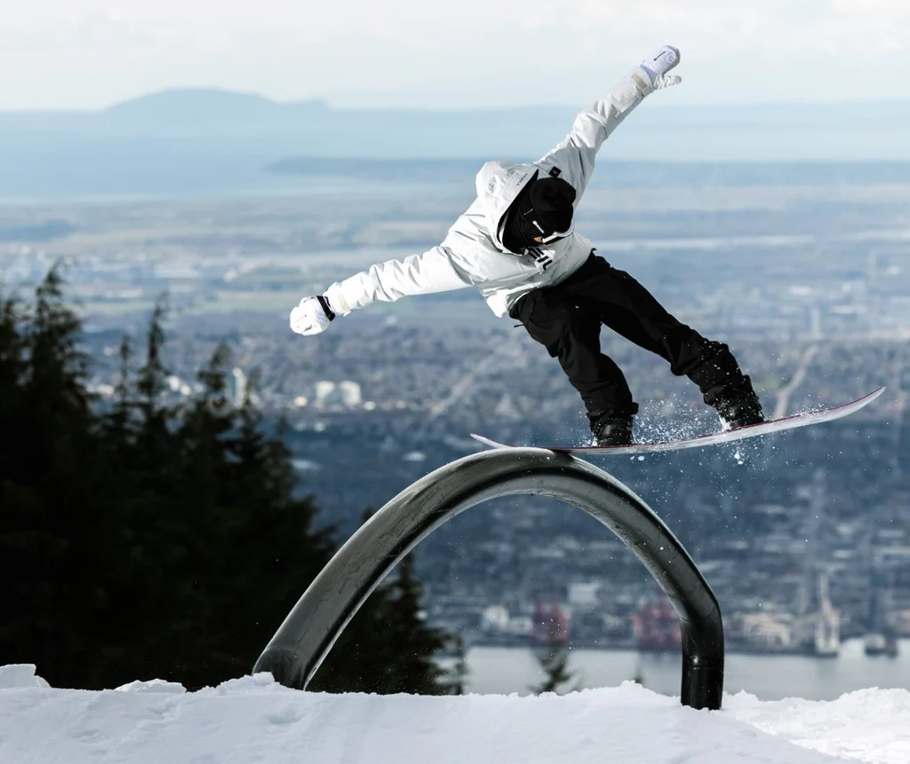
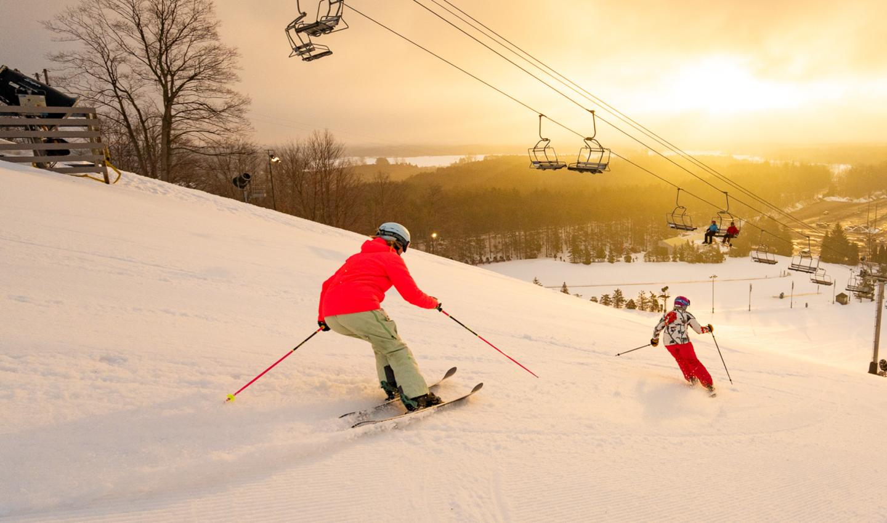
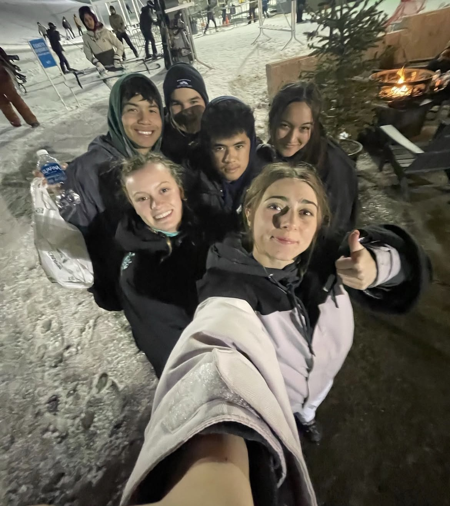

The Problem
Snow sports can be difficult to access
Snowboarding and skiing require more than interest. Students often need transportation to resorts, rental equipment, warm clothing, and lift tickets before they can even try the sport once.
Because of that, many students never get the chance to build confidence or discover whether they enjoy it.
Lift Tickets
Single-day access can already be too expensive for many families.
Rental Gear
Boards, skis, boots, helmets, and jackets add even more cost.
Travel Distance
Mountain resorts are far away, which makes transportation a major barrier.

Barriers
The cost adds up quickly
Snow sports are not just one purchase. They often require repeated spending on tickets, rentals, gas, food, and lessons. For students who are just beginning, that can make the sport feel unrealistic.
- Expensive resort admission
- Rental and clothing costs
- Transportation to mountain areas
- Limited beginner-friendly school programs

Solutions
Creating accessible entry points
Group trips, rental partnerships, and beginner lesson programs could make snow sports more realistic for students who otherwise would never have the chance to participate.
A school-based program would not just lower cost. It would also create community, confidence, and a clear path for new students to get involved.
At Aquinas, Ski/Snowboard club was created with the goal of improving students' access to snow sports. It provides many students with affordable options to enjoy the slopes.
